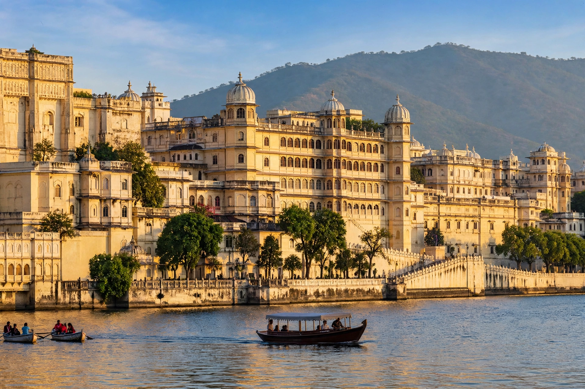

City Palace, Udaipur
From Wikipedia, the free encyclopedia

The City Palace of Udaipur, Rajasthan, is a vast palace complex on the east bank of Lake Pichola, built over nearly 400 years by the Maharanas of Mewar, beginning with Udai Singh II in 1553 as he founded the city. The largest palace complex in Rajasthan, it fuses Rajasthani and Mughal architecture — marble courtyards, mirrored and inlaid chambers, peacock mosaics — above the lake that holds the famous Lake Palace hotel.
The complex
The palaces present an imposing, almost fortress-like facade to the lake, concealing intimate interiors: the Mor Chowk with its peacocks in glass mosaic, the Zenana Mahal, mirror-worked Sheesh Mahal, miniature-painting galleries and the crystal gallery of a nineteenth-century Maharana's eccentric, unpacked crystal order. Part remains the residence of the Mewar royal family; part is museum and hotels administered by the family's trusts.
Setting
Udaipur's lakes and palaces — Jag Mandir island (which sheltered Shah Jahan, an inspiration, it is said, for the Taj Mahal) and the Lake Palace — make it Rajasthan's most romantic cityscape and a staple of films from Octopussy to Bollywood classics.